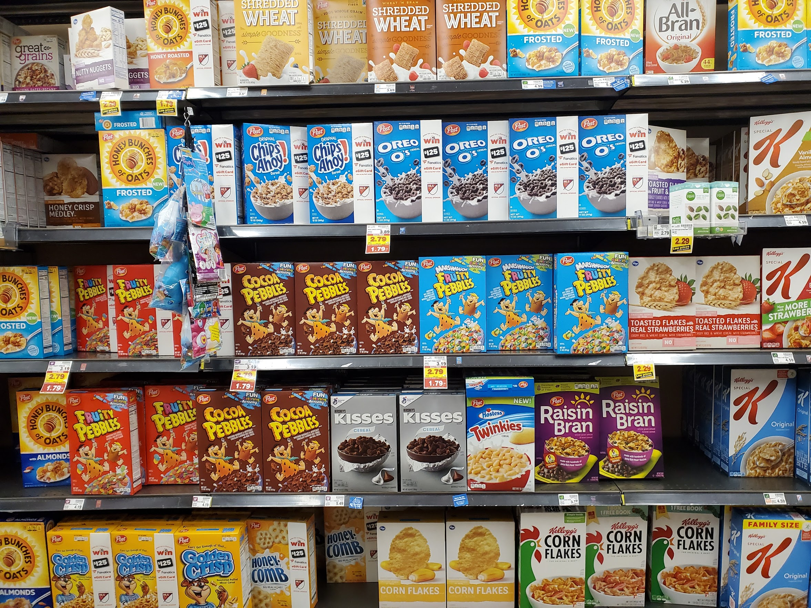
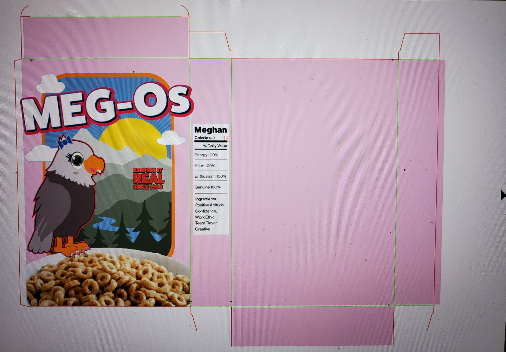
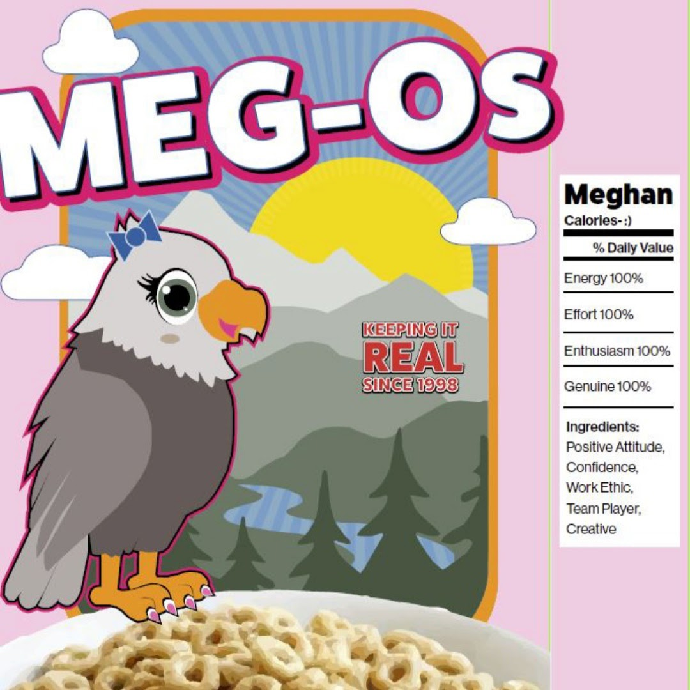
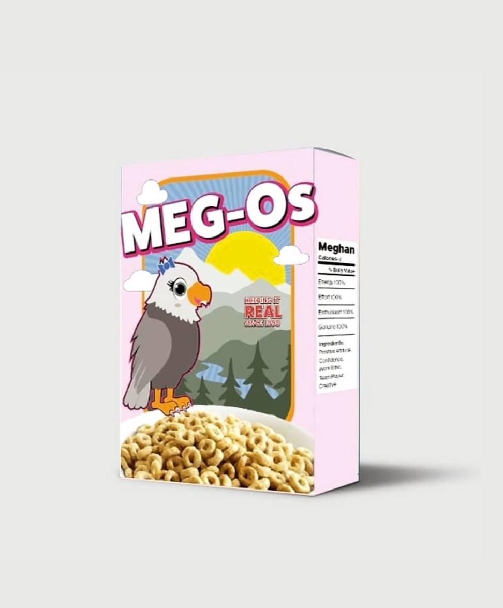

During a summer course, our class had to incorporate ourselves into some sort of food packaging. At first, I was going to design water bottle packaging but I pivoted to cereal. My last name is O’Malley so I had to incorporate the “O” in my design, after all the assignment was to make it about myself. The name Meg-Os for this project was too good to pass up. The majority of my class designed coffee packaging, so mine definitely stood out.
Although not required for class, I went to the store and walked down the cereal aisle to get inspired. I noticed common design elements and tried to incorporate them into my own design. I remember thinking as I was looking at the cereals, that each box had their own color. Green is Apple Jacks, Orange is Captain Crunch, Red is Fruit Loops, etc.. Also, I noticed how the characters on all the boxes were male. It was time to add Meg-Os to the market with a pink box and a female bird of prey.
   One day, I dream of actually bringing Meg-Os to the market. Although, I would like to re-design the packaging because the goal of this project was to describe myself with packaging and not necessarily for stores.